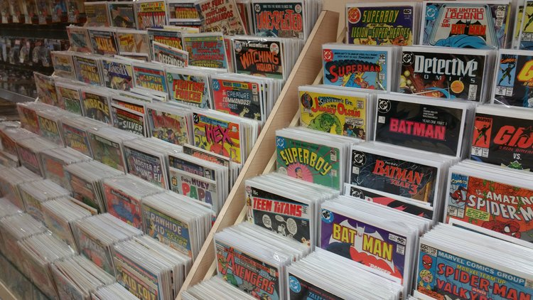
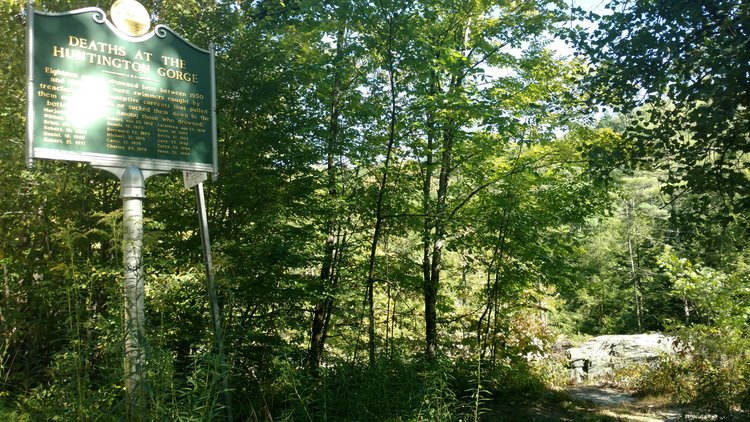
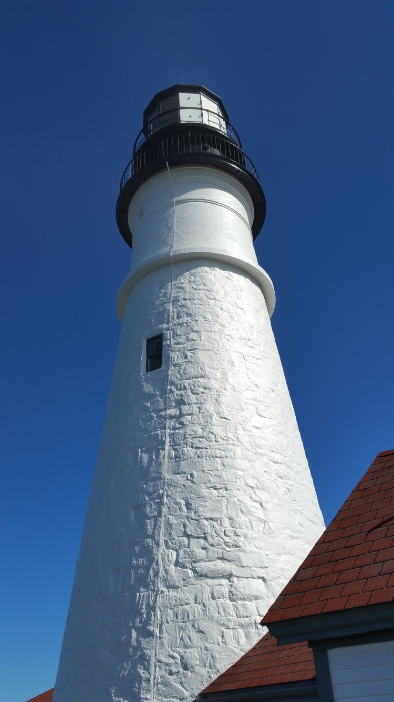

It's the end of week one, and we're settling ourselves down into a Starbucks in Portland, Maine, with a hot mint tea to ward off the chilly sea air. It sure doesn't feel like just a week... it's felt like an amazing month of traveling!
Right after my last update, we found ourselves drinking the night away on Burlington's lovely Church Street:

Lovely, lovely, drunk young people everywhere.
We then slept under a pretty serious thunderstorm (and slept off pretty serious hangovers) right on the shore of Lake Champlain, awaking to a pretty wicked view. My phone has the battery-life of a piece of cardboard, so I couldn't snag a photo before we headed out again.
After some delicious pancakes, we found ourselves in a strange pawn shop just outside of downtown Burlington, called Yin's Gift Shop. This guy had all the classic, tacky-Asian-shop essentials: swords, knives, weird bongs, tapestries... but also the most insane collection of action figures, LEGO minis, comic posters, and old school comics I had ever seen:
Seriously, this does it no justice whatsoever.
After pawning some stuff off on the very kind Yin, we weren't too sure where to head next! We looked at some maps, and decided to head out to Grand Isle County, in the middle of Champlain. It was a peaceful drive through some very blessed land, culminating in the most epic midday nap by the lakeshore.
Our hangovers now officially gone, we headed southeast into the Green Mountains once more, to camp out by the Waterbury Reservoir. We had our first close call with law enforcement not loving our car-for-a-house, but were left undisturbed until morning. We then headed to our final Vermont destination: Huntington Gorge. A beautiful little spot in the Vermont countryside, it's actually racked itself up quite the death toll...
This list ends in 1996, but many more have lost their lives since then because of the steep cliffs and intense currents... rest in peace.
After swimming (bathing, really) in the crystal clear waters, it was time for us to depart Vermont! We headed across the border, and into the White Mountains. We stayed at a drive-in campsite that night, and huddled inside the car after dinner to get out of the cold (all the wood in the site was soaked through, and I didn't feel like wrestling it to burn for hours).
The next day, we embarked on our first strenuous outdoor adventure: Mount Washington! Starting at Pinkham Notch Lodge, we climbed the Tuckerman Ravine until the Lion's Head alternate, scaling steep rock-faces on the side of the ravine. It was a long, tough climb, but man were the views UNREAL. There's really no feeling in the world like looking down on entire mountain ranges, on an entire state.

"CHEESE!"
We got going from the Lodge a bit late that day, and were worried we wouldn't beat nightfall to the bottom. So... we hitched a ride from our first travel buddy! Huge shoutout to Ray, from Rochester, NY, who drove us down and told us all about awesome hiking all over Maine and New York. Hope to meet with you again someday, Ray!
It was time for another meal not cooked by us, so we went to the Shannon Door Pub (apparently a pretty "famous" spot, among the locals) and got us some mini pizzas (Lacey checked the restaurant on Google listings, and everyone raved about the pizza and nothing else... it was... decent). We slept in the parking lot of Pinkham Notch Lodge that evening, mostly because we wanted to take advantage of their hot showers the next morning. Man, were they necessary at that point.
After cleaning our filthy, stinky selves, we headed south to North Conway to visit the lovely and oh so talented Aubrey Mennella (click here for her website, or here for her Instagram) at her studio, the Common Place Tattoo Company. It was awesome to catch up with Aubrey, and she gave us a ton of local spots to check out, in addition to hooking me the hell up with all the work connections she could think of. Thanks so much, Aubrey, I can't freaking wait to be tattooed by you!

Foggy views from Cathedral Ledge
We left North Conway that (yesterday) afternoon, and headed into Portland! Portland was... not quite what we expected (which was a giant, coastal Northampton, MA). There's a lot of poverty, and the tourist crowd is pretty... well, old. But it was awesome to breathe some sea air and get a serious change of scenery. The beer was dangerously cheap, too, so it was another buzzy night in the city!
Sadly, Maine doesn't seem to have the same feelings about dispersed camping as Vermont and New Hampshire, at least near Portland. Thankfully, Cabela's lets you sleep overnight in the parking lot, no sweat. Pretty handy tip if you're desperate. It wasn't a great night of sleep, and we both woke-up feeling pretty rough, but it was better than getting ticketed or something. We made use of their bathrooms and bought some extra equipment before touring South Portland, hitting up the necessary tourist destination:
The Portland Head Lighthouse.
We spent the day driving around looking for any sort of park or state forest to sleep in--nothing. We did find a totally obscene amount of country clubs ("damn, dirty, richers! Hip hop will never die!"), and some very cute little beach front villages, but settled on driving back to Portland for the evening. We're about to check out the Lobster Company for dinner, before we settle back into eating Campbell's every night...
Thanks for reading, and stay tuned for more!
Mileage: 802
Weather: Partly cloudly, oceany, windy, 65F
Currently listening to: Trevor Something - Soulless Computer Boy and the Eternal Render